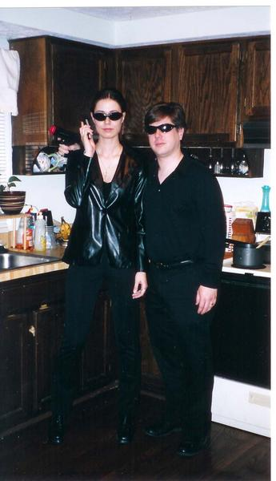
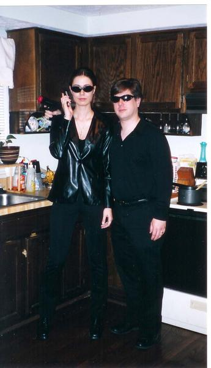
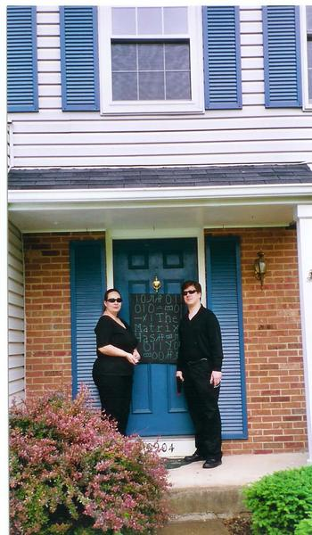
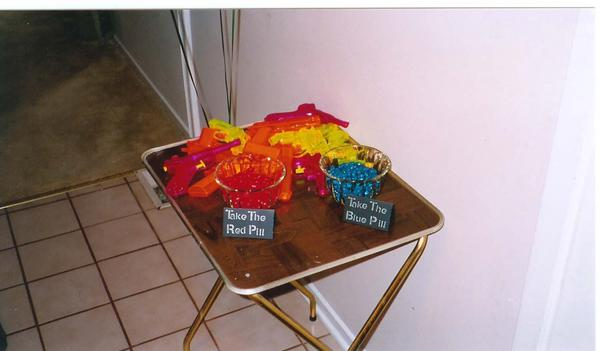
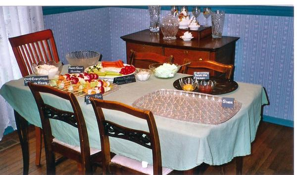
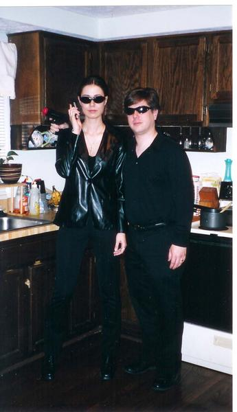

 On the door was a nice big Matrix-style poster declaring that "The Matrix has you".  When I walked in, I found a TV tray with two bowls of jelly beans: one with red beans (with a sign saying "Take the Red Pill") and one with blue beans ("Take the Blue Pill"). I took the red pill, of course. The tray also had a set of (water) guns to choose from. Everyone was wearing black clothes and shades, and were sporting the water guns and toy cell phones. They immediately handed me my cell phone and special "secret agent pistol" (another water gun). I quickly went to change into the black T-shirt and pants that seemed to me completely necessary :-).
 Parties require food, but the table's spread had signs explaining all the contents. Here were the signs, and the contents (all based on references to The Matrix):
All the decorations (streamers, balloons, tablecloths, etc.) were
black and green.
The black and green cake had a matrix-like screen on top
(made with colorflow) saying "Happy Birthday" in matrix-like letters.
My age was in there (in binary), but I won't admit it here :-).
The gift collection included several books on The Matrix and philosophy,
and the big gift was a Sony Playstation 2 with the Enter the Matrix
videogame (an excellent PS2 game, by the way; that and Baldur's Gate
are really quite good).
Here are a few shots of people having a good time....

If you like the Matrix, you should definitely look at ping pong Matrix.
Not done yet? See my Matrix-related essays, Man as the World-Builder and Why are Humans used as Batteries in the Matrix? Or, for many other things, see my home page.